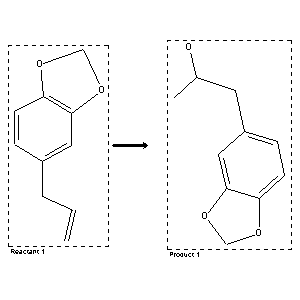

|  |
| FA | RX(1); FLST(1); RX(2) |
Reaction (1 of 1)
| Reaction ID | 3951298 |
| Reactant BRN | 136380 |
| Reactant | 5-allyl-benzo[1,3]dioxole |
| Product BRN | 150198 |
| Product | 1-benzo[1,3]dioxol-5-yl-propan-2-ol |
| No. of Reaction Details | 2 |
Reaction Details (1 of 1)
| Reaction Classification | Preparation |
| Reagent | 1.) Hg(OAc)2; 2.) NaBH4, 3M NaOH |
| Other Conditions | 1.) THF/H2O, room temp., 1 h; 2.) THF/H2O, 1 h |
| Comment | Yield given. Multistep reaction |
| Citation Pointer | 5940347; Journal; Barreiro, Eliezer J.; Costa, Paulo R. R.; Barros, Perola Regina V. R.; Queiroz, Waldemir M.; JRMPDM; J.Chem.Res.Miniprint; EN; 4; 1982; 1142-1165; |
Reaction Details (2 of 1)
| Reaction Classification | Multistage |
| Yield | 96 percent (BRN=150198) |
| No. of Stages | 2 |
| Stage 1 | |
| Stage 2 | |
| Reagent | Hg(OAc)2; NaBH4; aq. NaOH |
| Solvent | tetrahydrofuran; tetrahydrofuran |
| Time | 1 hour(s); 1 hour(s) |
| Temperature | 20 |
| Citation Pointer | 6332584; Journal; Zappala, Maria; Grasso, Silvana; Micale, Nicola; Polimeni, Santina; Micheli, Carlo De; SYNCAV; Synth.Commun.; EN; 32; 4; 2002; 527 - 534; |
Reference (1 of 2)
| Citation Number | 5940347 |
| Document Type | Journal |
| Authors | Barreiro, Eliezer J.; Costa, Paulo R. R.; Barros, Perola Regina V. R.; Queiroz, Waldemir M. |
| CODEN | JRMPDM |
| Journal Title | J.Chem.Res.Miniprint |
| Language Code | EN |
| Number | 4 |
| Publication Year | 1982 |
| Page | 1142-1165 |
Reference (2 of 2)
| Citation Number | 6332584 |
| Document Type | Journal |
| Authors | Zappala, Maria; Grasso, Silvana; Micale, Nicola; Polimeni, Santina; Micheli, Carlo De |
| CODEN | SYNCAV |
| Journal Title | Synth.Commun. |
| Language Code | EN |
| (Series) Volume | 32 |
| Number | 4 |
| Publication Year | 2002 |
| Page | 527 - 534 |